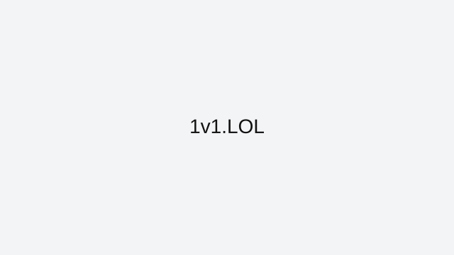

1v1.LOL
1v1.LOL blends quick building with direct duels, so mechanics and decision speed are both required.
How to approach this game
Use simple, repeatable build patterns under pressure and prioritize right-hand peeks. After each shot, either reset to cover or take immediate height if your opponent is weak.
Common mistakes to avoid
A common issue is overbuilding without a plan. Extra structures do not help if they remove your line of sight or drain your reaction window.
Who this game is best for
1v1.LOL suits players who like head-to-head competition, short rounds, and skill expression through movement plus building.
Why it stays in our curated index
1v1.LOL stays in ArcadeZone's reviewed collection because it has a clear skill loop, reliable browser access, and enough real gameplay depth to justify written guidance. We do not keep indexed pages that only repeat generic descriptions or send users to thin external links.
Best session style for this game
These sessions are usually best in short bursts where you can focus on one movement habit, one aiming habit, or one route improvement at a time.
Related reviewed games: Krunker.io, Slither.io, Geometry Dash.
ArcadeZone reviews this title for accessibility, control clarity, and replay value before keeping it in the curated index. Our goal is to help players choose the right game quickly, then improve through practical guidance instead of generic filler text.
What you'll love
- Curated review page with practical strategy guidance and clean navigation.
- Direct access to browser gameplay source with no installs required.
- Category fit: Action gameplay style with related recommendations.
Game essentials
- Category: Action
- Game type: Shooter
- Page status: Indexed (reviewed)
- Play format: opens the original browser source in a new tab

How to play
Use keyboard movement with mouse aiming. Stay mobile, pre-aim common angles, and avoid open-lane overexposure.
Tips & Tricks
- Use simple, repeatable build patterns under pressure and prioritize right-hand peeks. After each shot, either reset to cover or take immediate height if your opponent is weak.
- A common issue is overbuilding without a plan. Extra structures do not help if they remove your line of sight or drain your reaction window.
- Practice in short sessions and track one improvement goal per run to build measurable progress.
Frequently asked questions
What should I practice first in 1v1.LOL?
Repeatable build-defense patterns and simple peek shots.
Why do I lose close fights?
Overbuilding and poor line-of-sight control are common causes.
Is high ground always the best choice?
Not always, but it is usually strong if you can hold cover and sightlines.
Play
Use the verified source link below to launch the game in a new tab.
Open 1v1.LOL (external)Related games
Related reviewed games: Krunker.io, Slither.io, Geometry Dash.
More from ArcadeZone
Developer & Credits
ArcadeZone reviews 1v1.LOL for control clarity, replay value, and accessibility before listing it as curated content. We link to the original browser source and provide player-focused guidance on this page.